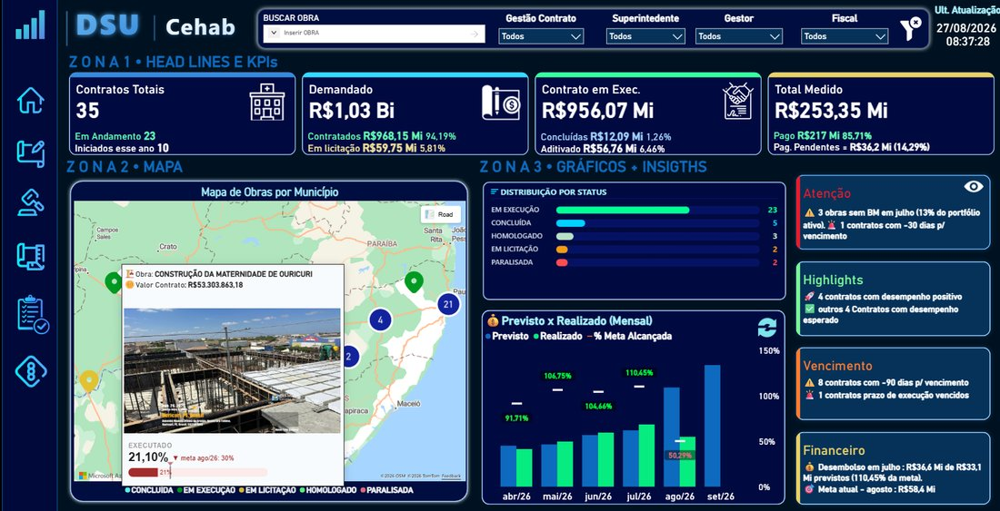

Gestão Financeira
“Minha empresa está realmente dando lucro?”
- DRE gerencial e margem por produto, loja ou unidade
- Fluxo de caixa realizado vs. projetado
- Contas a pagar e a receber, inadimplência
- Orçado vs. realizado e controle de custos
A ADS transforma planilhas, ERPs e sistemas em painéis de gestão no Power BI, para que empresas de atacado, supermercados, varejo, logística e construção civil saibam onde estão ganhando e onde estão perdendo dinheiro.

Atualização automática
Dados do dia, sem planilha manual
Alertas de gestão
O que precisa de atenção hoje
Experiência aplicada em
O desafio
Quase toda empresa em crescimento passa por isso. O problema raramente é falta de dados. É falta de dados organizados.
Alguém da equipe passa horas copiando e colando planilhas. Quando o número chega, a decisão já passou.
Financeiro, comercial e operação discutem qual planilha está certa, em vez de discutir o que fazer.
Sem indicadores claros, preço, compras, estoque e metas são definidos pela intuição, e o prejuízo só aparece depois.
O ERP guarda tudo, mas ninguém consegue tirar respostas dele de forma rápida e visual.
A boa notícia: seus dados já têm as respostas. Nosso trabalho é organizá-las e colocá-las na sua mão.
Soluções
Começamos pelas perguntas que tiram o seu sono. Os gráficos vêm depois.
“Minha empresa está realmente dando lucro?”
“Quem vende mais, o quê, e com qual margem?”
“Onde estou perdendo eficiência e dinheiro?”
“A obra está no prazo e dentro do orçamento?”
Setores
Cada setor tem seus próprios indicadores. Chegamos sabendo o que importa para o seu.
Não viu o seu setor? A lógica é a mesma: organizar, medir e decidir.
Conte o seu cenárioProjetos em produção
Uma amostra de entregas para gestão pública e privada, do controle financeiro ao monitoramento de obras. Clique em uma imagem para ampliar.
Como trabalhamos
Você acompanha cada etapa e vê resultado desde as primeiras entregas.
Entendemos o seu negócio, as dores e as decisões que precisam de apoio. Mapeamos onde estão os dados.
Conectamos e tratamos planilhas, ERP e sistemas em uma base única e confiável.
Construímos os dashboards no Power BI com os indicadores que importam, validando com a sua equipe.
Treinamos o time, automatizamos as atualizações e evoluímos os painéis junto com a empresa.

Lucas Alencar
Fundador & CEO · Engenheiro Civil
Especialista
Power BI & SQL
Quem está por trás
A ADS nasceu da prática. Antes de construir dashboards, Lucas Alencar, nosso fundador, esteve do outro lado da mesa: como engenheiro civil e gerente administrativo, viveu na pele a dificuldade de decidir com informação espalhada e atrasada.
Foi aí que começou a implantar Power BI e SQL na própria gestão e viu a rotina mudar: menos tempo montando relatório, mais tempo decidindo. É essa vivência que nos diferencia. Entendemos o problema do negócio antes de abrir o Power BI.
“Nossa jornada começou nos canteiros de obras e evoluiu para os dashboards. Aprendemos que o maior ativo de uma empresa é a informação que ela já produz.”
2017 – 2019
Bezerra Engenharia
Projetos, processos licitatórios e legalização de obras junto aos órgãos competentes.
2021 – 2025
Arbitrium Engenharia
Engenheiro civil e gerente administrativo. Gestão financeira e de equipes; implantação de Power BI e SQL na gestão.
2025 – hoje
CEHAB · Governo de PE
Business Intelligence para monitoramento físico-financeiro de contratos e obras públicas.
Hoje
ADS Alencar Data Solutions
Toda essa bagagem a serviço de empresas que querem crescer com decisões baseadas em dados.
O que você recebe
Cuidamos da parte técnica de ponta a ponta. Você fica com o que importa: a informação certa, na hora certa.
Painéis interativos com os KPIs do seu negócio, para acompanhar metas e resultados sem esperar o fechamento do mês.
Planilhas, ERP, sistemas e Google Sheets consolidados em uma fonte confiável. Fim do “qual número está certo?”.
Coleta e atualização automáticas com Power Automate e atualização agendada, reduzindo o trabalho manual.
Métricas bem definidas em DAX e Power Query, prontas para crescer junto com a empresa.
Publicação no Power BI Service, gateway e controle de acesso: cada pessoa vê o que precisa ver.
Sua equipe aprende a ler e usar os painéis no dia a dia, criando uma cultura de decisão baseada em dados.
Perguntas frequentes
Sim, e a maioria dos projetos começa assim. Organizamos as planilhas que você já tem e, quando fizer sentido, conectamos ao ERP ou a outros sistemas.
Depende de quantas pessoas vão acessar os painéis e de como eles serão compartilhados. No diagnóstico indicamos a opção mais econômica para o seu cenário.
Depende do volume e da organização dos dados. Trabalhamos com entregas por etapas, então você começa a usar os primeiros painéis antes do projeto completo terminar.
Sim. Tratamos as informações com confidencialidade e aplicamos boas práticas de governança e controle de acesso no Power BI Service.
Sim. O trabalho pode ser feito de forma remota, com reuniões online, e presencialmente quando o projeto pede.
Treinamos a sua equipe e seguimos disponíveis para ajustes e novos indicadores, à medida que a empresa evolui.
Próximo passo
Conte em poucas palavras o seu desafio. Respondemos pelo WhatsApp para marcar uma conversa de diagnóstico, sem compromisso.